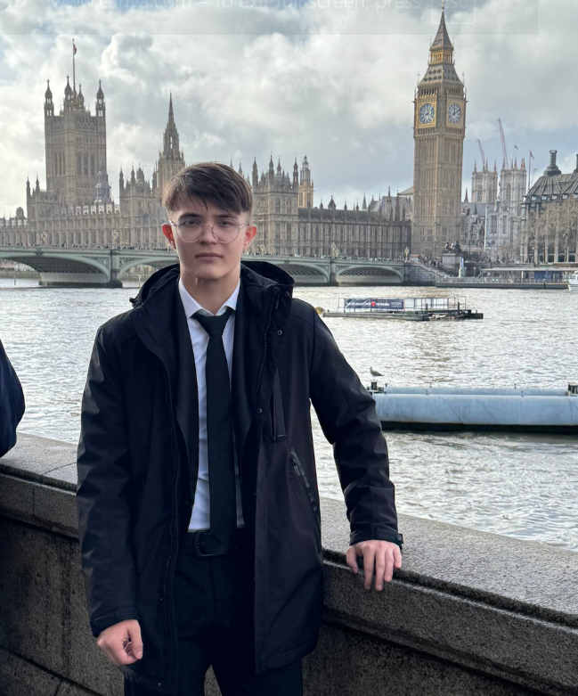

The story of
Born in Seattle. Raised in Moldova. Forged by curiosity, competition, and a refusal to sit still.
Seattle, Washington — USA
The Pacific Northwest welcomed a new arrival on a quiet winter morning. Seattle's grey skies and restless energy turned out to be a fitting opening chapter for someone who'd never stop moving.
A world apart
From Seattle to Chișinău — the contrast was everything you'd imagine. A new country, a new culture, a new pace of life entirely. At seven years old, adapting wasn't a choice. It was the only option. And it made me sharper.
A new classroom, a new world
Walked through the doors of Heritage International School and immediately felt at home. An international environment, high standards, great teachers — this was the place that would shape the next decade of my life. Happy from day one.
Grade 2 → Grade 4, no detours
At the end of second grade, the school decided I was ready to skip straight into fourth. A vote of confidence that I wore as a badge of pride — and a challenge I had no intention of wasting. Happy boy doesn't quite cover it.
Volunteering · Spelling Bees · World Scholars Cup
Discovered that school was just the beginning. Started volunteering in the community, competed in spelling bees, and entered the World Scholars Cup — a global academic competition testing everything from science to storytelling. The world was getting bigger and I was sprinting to keep up.
Into Lower Secondary
Closed one chapter and opened the next. Six years of primary school done — and with them, a foundation built on curiosity, hard work, and more after-school activities than most adults manage in a year. Lower secondary awaited. I walked in ready.
Model United Nations — New York City
Flew to New York for the Global Citizen Model United Nations conference — debating real-world issues in rooms that felt like they mattered. The city was electric. The experience was formative. Representing a position at the UN level, at thirteen, changes how you think about the world.
Model United Nations — Prague, Czech Republic
Another MUN, another city, another room full of people arguing about the future. Prague was beautiful and the conference was sharp. Eighth grade was shaping up to be a year of international exposure and I was fully here for it.
Two MUNs, one year
Ninth grade and I doubled down — MUNYDG and AIMUN back to back. Two different conferences, two different formats, the same commitment to showing up prepared. The MUN circuit was becoming a second language — diplomacy, research, rhetoric, persuasion. All of it clicked.
Exams, competition, the full load
Balancing Cambridge Checkpoint exams, World Scholars Cup prep, volunteering, and everything else I love — all at once. The schedule is full. The energy is higher. Feeling good about where things are headed and not slowing down for anything.
IGCSE Year 1 begins next
The bell rang on Grade 9. Everything I've built — the MUNs, the competitions, the volunteering, the friendships, the late nights studying maths — all of it brought me here. IGCSE year one is next. The chapter is still being written.

From Seattle to Moldova to New York to Prague — the path has never been straight, and I wouldn't have it any other way. There's a lot more road ahead.